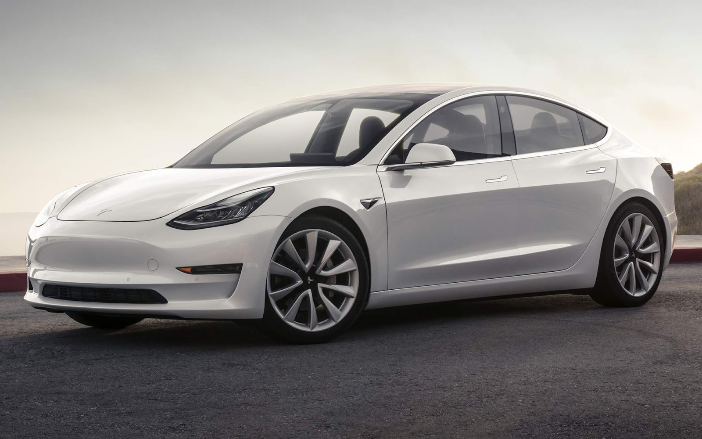

Tesla

Tesla - Model 3
Um carro elétrico vendido a um preço mais acessível.ossui um interior minimalista, e uma touchscreen de 15 polegadas serve como painel do carro. Ele tem navegação embutida, conexão Wi-Fi e 4G, e controle por voz. O Model 3 possui todos os sensores necessários para o Autopilot, sistema que toma o comando do volante e dirige por você.